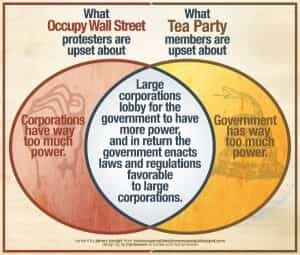
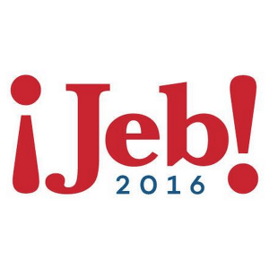
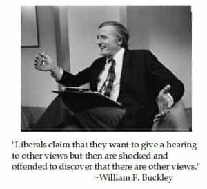

Michael is the author of Staying Married in a Degenerate Age. Follow him on Twitter or Facebook. You can read more of his writing at Honor and Daring.


The term “cuckservative” is much more than an insult. It comes loaded with some ideas that makes me think that we are witnessing a great shift in American politics—perhaps even the birth of a new movement.
If you are unfamiliar with the term cuckservative, you need to read Matt Forney’s excellent introduction to the concept. Here is Matt’s definition:
[C]uckservatives are right-wing politicians and pundits who make a big show of defending traditional values, yet when push comes to shove, they roll over for the left on every issue out of fear of being called “racist,” “sexist” or “homophobic.”
Some moderate GOP pundits have claimed that the term comes from white supremacist circles, but in an article on the topic, Milo Yiannopoulos believes that the term cuckservative derives from “cuck” which is:
[A] byword for needlessly relinquished manliness, for selling out and caving in. The original metaphor of watching your partner getting slammed by another dude now simply means abandoned principles and a lack of backbone. It’s a byword for beta male or coward.
In other words, Milo argues that the term is primarily an attack on wimpy conservatives. I am going to disagree with Milo a bit here. While some users of the term “cuckservative” are using it against GOP moderates who are scared of their own shadow, there is no question that other users of the term are using it to describe Republicans who support policies that undermine white people.
I believe that most conservatives, myself included, simply consider themselves Americans, and they are uncomfortable with thinking of themselves as a separate community. But since the Left has been trying to divide the nation into a bunch of ethnic factions for the past 50 years, it was just a matter of time before whites started to think of their own interests.
Regardless of how you approach the term, the use of the term cuckservative is more than an insult. It comes along with the idea that the US government is no longer responsive to the desires of the majority of voters. It also means that people are tired of not being allowed to debate controversial issues that have a significant impact on their lives.
There have always been people outside the political mainstream, both on the left and on the right. These have never amounted to much. The left has groups such as the greens, communists, and socialists, but I have never been able to discern a difference between the agendas of these groups and the Democratic Party platform. On the right there are libertarian and paleo-conservative groups.
There have also been “revolutions” in political parties where a party’s center shifts to the left or to the right. The most recent examples of these movements were the “Reagan revolution” which moved the GOP to the right, and the election of President Obama, which shifted the Democratic Party to the left from the more centrist policies of the Clinton administration.
Unlike these “revolutions” a particular leader is not leading the current awakening. Rather, it is a grass roots movement where a whole segment of the Republican base is waking up to realize that the Republican Party is completely unresponsive to the wishes of its constituents. It is as if a large portion of a major party took the red pill at the same time.
Interestingly, it has been the Republican response to the policies of President Obama that have precipitated the awakening. Here are a few examples.

The “signature legislation” of the Obama administration is Obamacare. It’s a political masterpiece. It enriches the President’s big money donors (insurance companies, drug companies, and the AMA) and provides marginal aid to low-income voters while making the middle class foot the bill.
The Democrats played hardball to get it passed, but the Republican opposition has been clownish. Instead of acting intelligently to modify the law, they voted on repeals of the whole Act, knowing that these repeals had no chance of passing both houses of Congress.
Obamacare is just the tip of the iceberg when it comes corporate influence on US politics. Disciples of Ayn Rand like to believe that corporate CEOs are all incorruptible John Galts who are valiantly opposing socialism and any check on human creativity. In truth, they are more likely to be schmoozing government officials in the hope that they can gorge at the government trough at the expense of taxpayers.
Whether it is wrongheaded immigration policy, free trade deals that ship manufacturing jobs overseas, or environmental legislation that bans cheap incandescent light bulbs, corporate money is likely behind it.
It is not a secret that the Democrats are heavily reliant upon blacks as a voting bloc. Part of the President’s success is because he was very effective in getting black voters to the polls. Hillary needs to do the same thing to win.
To make sure that black voters stay active, the Democratic strategy has been to inflame racial tensions. The way this has been done is through the hyping of events such as the Trayvon Martin shooting by the “white Hispanic” man, and events in Ferguson and Baltimore. In a different political climate, these events would have remained local news stories. Instead, they have been amplified and turned into the Black Lives Matter movement.
Ironically, the people who get labeled “racist” are not the leftists who are perpetuating identity politics, but the people who object to it.
Another thing that has been annoying conservatives is the lack of enforcement of existing border laws. This was compounded by the President’s executive amnesty for illegal immigrants.
The Left’s aim is to shift the racial, and more importantly, the voting demographics of the country. The political Left in the US is not dispassionate about the decreasing role that whites will play in the future—they are positively giddy about it. A recent Salon headline read:
Enjoy it while it lasts! GOP base is still white and aging. Yes, Democrats got hammered yesterday. But the demographics are undeniable, and the GOP’s base still has no future
If you don’t have a problem with the above headline, consider what the reaction would have been if it read:
Enjoy it while it lasts! Hillary’s base is still aging females. The demographics are undeniable. Hillary’s base still has no future
The GOP not only did not oppose the executive amnesty, they funded it without raising an eyebrow.
The Republican presidential candidates have been similarly weak on immigration.
While he was campaigning for the Senate, Marco Rubio opposed creating a path to citizenship for illegal immigrants saying, “We have a path for citizenship. It’s called coming legally into this country.” But as soon as he was safely in the Senate he started work on a comprehensive immigration reform bill that included a path to citizenship.

GOP establishment darling Jeb Bush stated that for some immigrants crossing the border illegally is an “act of love.”
Meanwhile, anyone who makes the perfectly reasonable suggestion that we should actually enforce the border laws that are already on the books is called a racist.

Conservative Americans have always harbored reservations about the issues listed above, but they have never dared to speak openly because they feared being branded with a label. The difference is that now, these issues are being discussed in the open.
This should be a welcome development. Instead of demonizing people for raising wholly legitimate concerns, we can freely debate these issues.
But the cuckservatives are not happy about that. They believe that the future of the Republican Party is to continue to move leftward as the wider society marches leftward. And if the current policies are hastening the move then so be it.
The more important question is what happens from here? Is the new awakening the start of a new movement? Or even a new nationalist political party?
Let’s hope it is not the foundation for a third party. Parliamentary systems favor the creation of new parties, but the US system of government makes third parties a losing proposition. Plus, Hillary would like nothing better than to see a third party candidate to the right to help her cruise to victory.
Instead, I’d like to see the new openness go mainstream. I believe the majority of the Republican base feels this way. The campaign of Donald Trump has shown that conservatives will support politicians who fire their politically correct cuckservative handlers and talk about the issues that Americans care about.
But will other Republicans have the courage to do it? I am pessimistic, but I never would have dreamed that illegal immigration could be discussed openly at a national level. Perhaps there is still hope.
Read More: 10 Signs You Might Be A Cuckservative